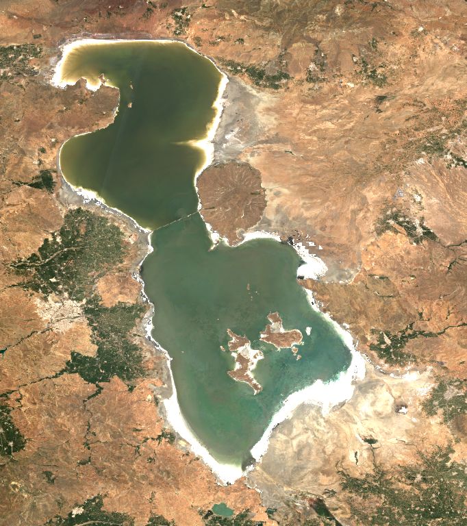
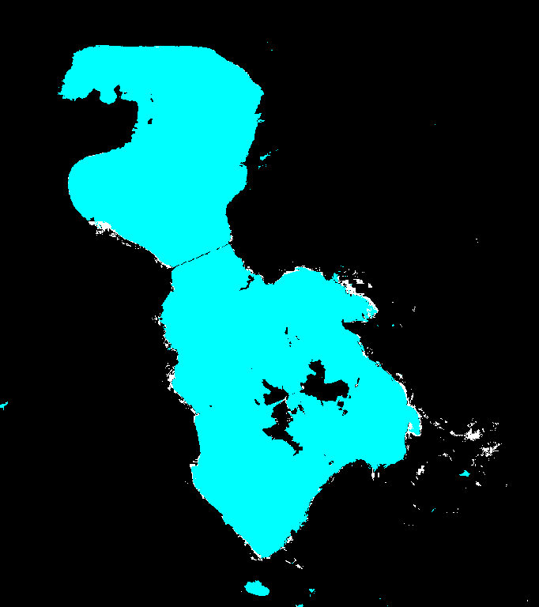
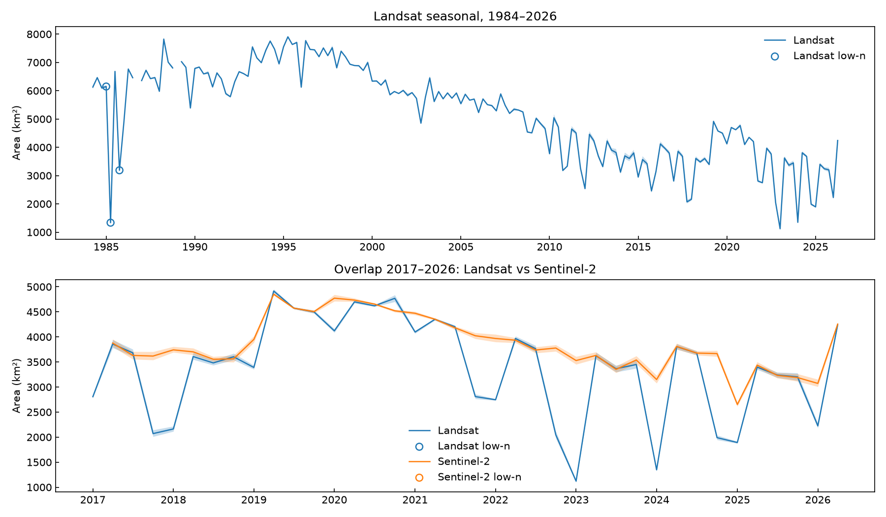
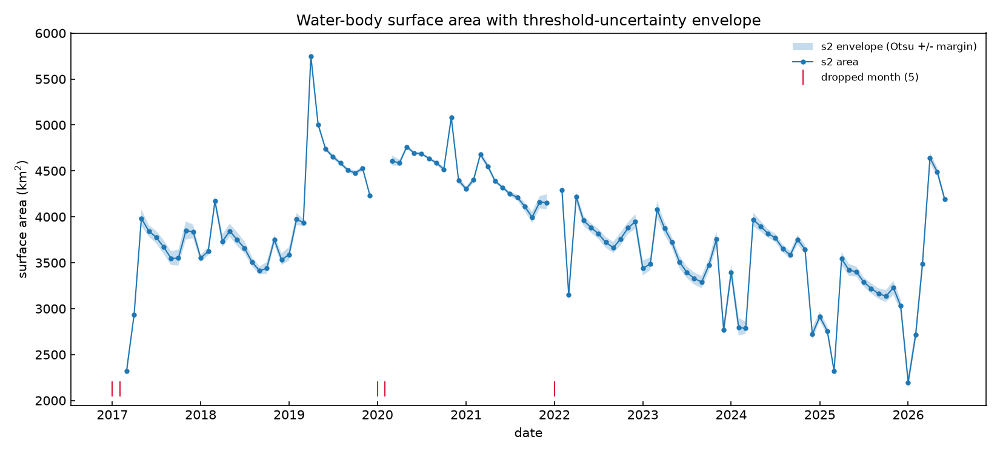

An Open-Source Tool for Watching Lakes from Space
Lake Urmia, in northwest Iran, was once one of the largest salt lakes on Earth — in wet years it spread over 7,000 square kilometers, an area larger than the U.S. state of Delaware. Over the last three decades it has lost most of its water to upstream dams, irrigation, and drought. It is a slow-motion environmental crisis, and it is big enough to watch from orbit. I wanted to answer a simple question: how well can an individual measure this, using only free, publicly available satellite images? So I built an open-source tool — lake-area-gee — to find out. The answer: remarkably well. Everything you see below is its output.
The idea
Two families of Earth-observation satellites photograph every spot on the planet, week in and week out, and give the images away for free: Landsat (run by NASA and the U.S. Geological Survey, taking pictures since 1984) and Sentinel-2 (run by the European Space Agency, since 2015). Their cameras record not just visible light but also invisible colors, like infrared — and that is the trick. Water is one of the few surfaces on Earth that reflects green light but swallows infrared almost completely. Land does the opposite.
So for every pixel in an image, you compute a simple score from the green and infrared measurements — the standard version is called the Modified Normalized Difference Water Index (MNDWI). Water pixels score high, land pixels score low. Pick a cutoff between the two, count the pixels above it, multiply by the ground area each pixel covers, and you have the lake's surface area on that date. Repeat for every date since 1984 and you have the lake's history.
The images add up to terabytes, but a platform called Google Earth Engine stores the entire archive and lets you run the math on Google's computers for free (for research and non-commercial use). Only the final numbers come back to your laptop, so the whole 42-year record computes in minutes, without downloading a single image.


What 42 years look like

The trajectory is stark. Through the mid-1990s the lake regularly exceeded 7,000 square kilometers. By the early 2020s a typical summer footprint was under 4,000. Along the way the record captures a brief recovery around 2019–2020 (after wet winters and restoration releases), a new low in 2023–2025, and a partial rebound after the wet 2025–26 winter. The zigzag riding on top of the long trend is not noise — it is the lake breathing with the seasons: spring snowmelt from the surrounding mountains fills it, and summer evaporation draws it back down.
Comparing like with like — the same month (July), the same satellite family (Landsat), sparse years excluded — puts numbers on it. The July record peaks in 1995 at 7,705 square kilometers and bottoms out in 2025 at 3,292: a 57% loss. Over the two decades of steady decline (1995–2015), the lake shrank by about 190 square kilometers per year — half a square kilometer every day, for twenty years. Put another way: the average July lake of 1994–1999 was 6,672 square kilometers; the average of 2020–2025 is 3,876 — a 42% smaller lake within one generation.

What can go wrong (and how to be honest about it)
A number without its caveats is a trap. Measuring a lake from space has a few, and they are worth understanding because they apply to almost any satellite-based measurement you will ever read about:
- Snow looks like water. To the water score, fresh snow and open water are nearly identical. One January, the raw method reported 12,469 square kilometers — three times the actual lake — because it counted snow on the surrounding mountains as water. The fix is to detect snow separately and remove it, and to discard winter months too snowbound to trust.
- The shoreline is genuinely fuzzy. Urmia's margins are flat salt flats where "land" and "water" blur into wet, salty crust. Small changes in the cutoff move the measured area, so every point in the charts carries an uncertainty range computed by re-running the measurement with stricter and looser cutoffs. The range is narrow when the lake is full and wide when it is low.
- Different satellites disagree in winter — and the reason is instructive. In summer, Landsat and Sentinel-2 agree to within a fraction of a percent — a strong sign the method is sound. In winter they can disagree by tens of percent. The disagreement is not about water: it is about ice. Each mission ships its own algorithm for labeling snow and ice pixels (NASA/USGS and ESA built them independently), and those labeled pixels are what get removed before measuring the lake. A winter lake surface is exactly the ambiguous stuff the two algorithms judge differently — thin ice, slushy brine, snow on wet salt crust — and Landsat labels more of it as ice, so it reports a smaller lake. Underneath sits a question with no clean answer: does a frozen surface count as lake area? In summer there is no ice, both algorithms go quiet, and the two satellites see the same shoreline. Knowing when your instruments agree matters as much as knowing that they agree.
- "Area" depends on the definition. This method measures everything that is wet — including shallow, centimeters-deep sheets of brine on the salt flats. Figures quoted in the news usually mean deeper open water, so they run lower. The shape of the trend is far more trustworthy than any single number.
- The early record is thin. In the 1980s, only a handful of usable images exist per season. Those points are flagged as lower-confidence rather than silently mixed in with the rest.
Use it for your lake
Nothing here is specific to Lake Urmia — the same physics works for any lake, reservoir, or dam on Earth, and that is the point of lake-area-gee. Point it at a different water body by giving it the corner coordinates of a rectangle around it, pick a satellite and a date range, and it produces the same charts, uncertainty ranges, and quality-check images you see here. The math at its core is automatically tested, every caveat above is documented in the repository's method notes, and the README walks through setup from zero. If you use it for a water body you care about, I would love to hear about it.